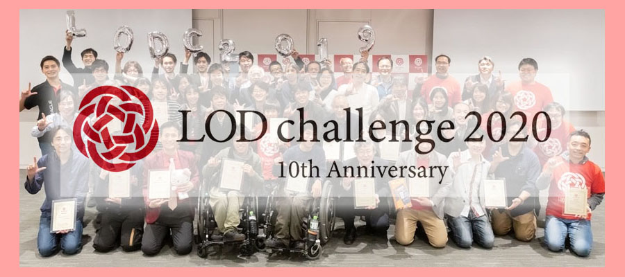

LODチャレンジ2020
オンライン授賞式シンポジウムの開催について

Linked Open Data チャレンジ 2020 実行委員会は、表記のシンポジウムを下記の通り開催いたします。
最優秀賞をはじめとした各受賞作品を受賞者本人から紹介していただくことを通じて、オープンデータ活用の様々な最新事例を学ぶとともに、参加者相互の交流を深めていただくことを目的としています。
どなたでも参加できますので、受賞者やご家族様、ご友人、シビックテックの方など、お誘い合わせのうえ是非ご参加ください。多くの方のご参加をお待ちしております。
実施要領
日 時 ： 2020年12月20日(日) 14:00～17:00
方 法 ： オンライン（ Zoom使用 ）
参加費 ： 無料
注意事項： 参加には事前申込が必要です。申込をしていただいた方に後日Zoomの招待URLをメールでお送りします。
イベントは終了しました
※上記のフォームへの入力ができない方は，事務局（office@lodc.jp）宛にメールにて参加希望の旨をお知らせください．
プログラム予定
14:00 開会
14:00-14:15 オープニング・LODチャレンジ2020開催報告
古崎 晃司（LODチャレンジ2020実行委員長 ／ 大阪電気通信大学）
14:15-16:45 授賞式及び受賞者による作品プレゼンテーション
審査委員による作品講評、受賞者への質疑応答など
１．パートナー賞
２．スポンサー賞
３．テーマ賞及び学生奨励賞
４．部門賞
（アイディア部門、データセット部門、アプリケーション部門、データ分析・可視化部門、基盤技術部門）
５．最優秀賞
16:45-17:00 クロージング
武田 英明（LODチャレンジ2020審査委員長 ／ 国立情報学研究所）
※表彰の順序や内容は変更される場合があります。
お問合せ
Linked Open Data チャレンジ Japan 2020 実行委員会 事務局
office@lodc.jp
参考情報
LODチャレンジ2020 受賞作品一覧
LODチャレンジ2019（昨年度開催）受賞作品一覧
公式サイト・SNS
公式サイト：
http://lodc.jp
Twitter：
@LodJapan
Twitterハッシュタグ：
#lodc2020
Facebook：
http://www.facebook.com/LOD.challenge.Japan